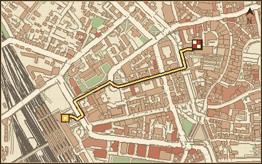

DER PIXEL-STADTLAUF DURCH BAYERN
AUF NACH AUGSBURG
Drei echte Orte. Ein Hoodie. Zu viel Straßenverkehr.
FORTSCHRITT
0 / 8
ETAPPE 01 · ANKUNFT
48.3655 N / 10.8857 O

ECHTE KARTEOPENSTREETMAP
Der letzte Zug ist durch. Jetzt geht es über die Straßen.
STRECKE
870 m
HÄUSER
24
MÜNZEN
24
BESTZEIT
—
Gebäude & Straßen: OpenStreetMap-Mitwirkende
Fußroute: OSRM · 512 × 320 px
WÄHLE DEINE ETAPPE
1 FREIGESCHALTET
BEREIT ZUM LOSFAHREN?
HAUPTBAHNHOF
Der Kadett wartet. Klick auf "Losfahren" und lauf durch die echten Straßen.
Etappe 1 ist freigeschaltet.